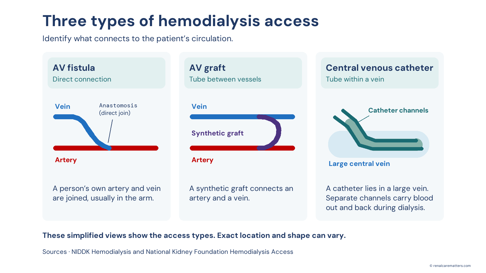
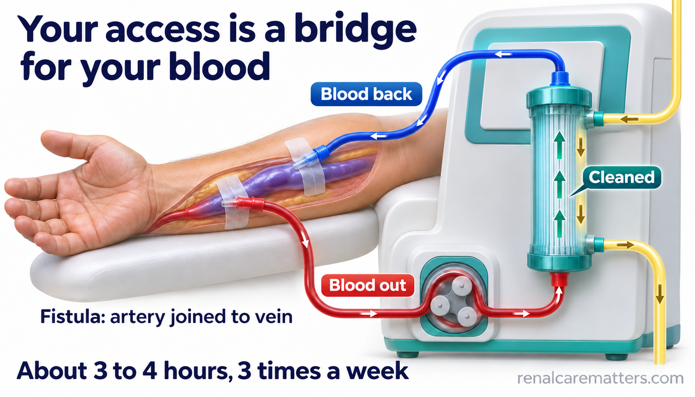
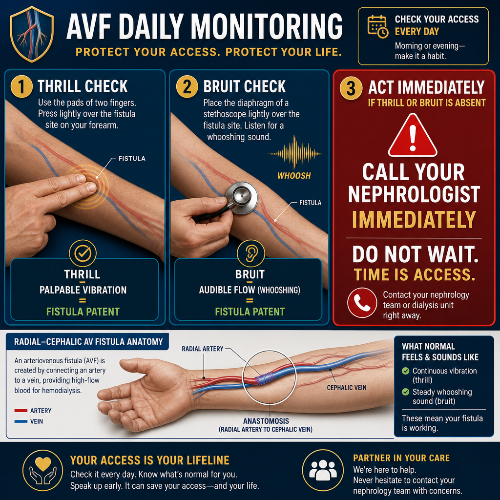
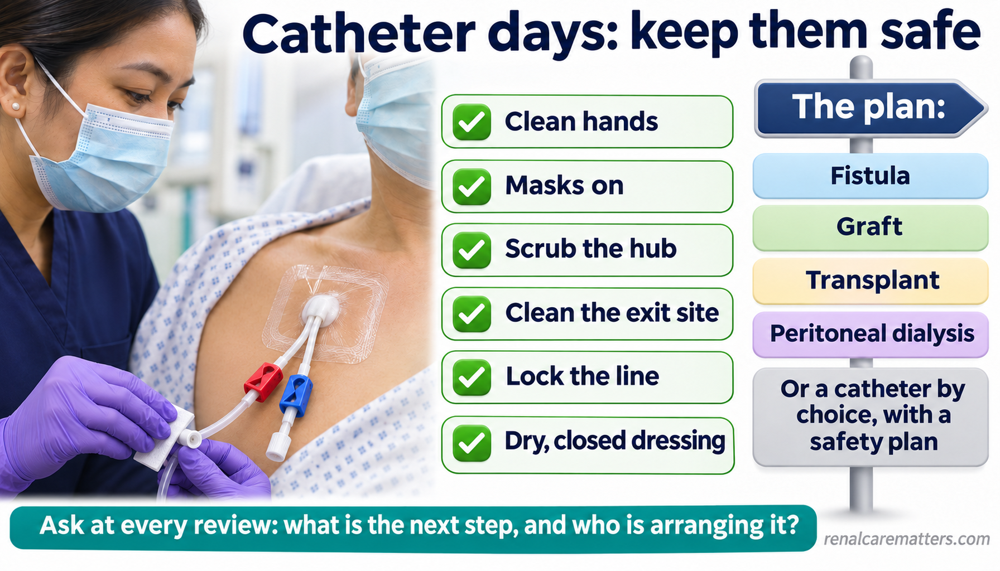
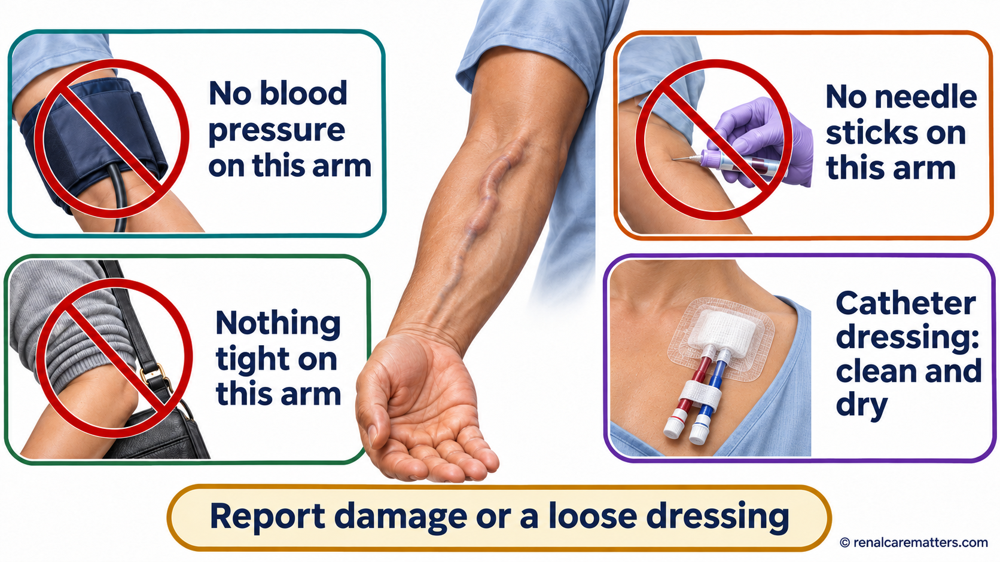
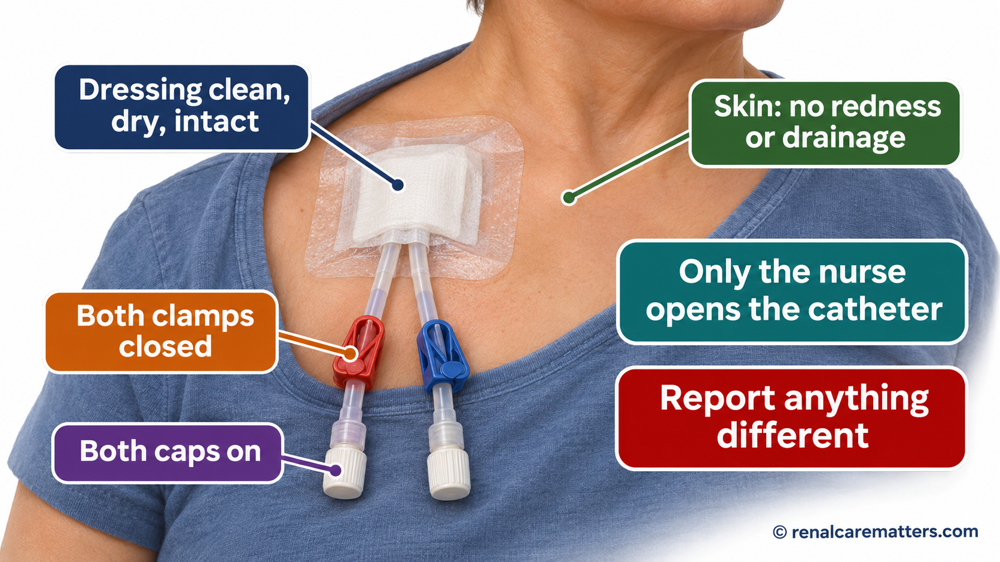
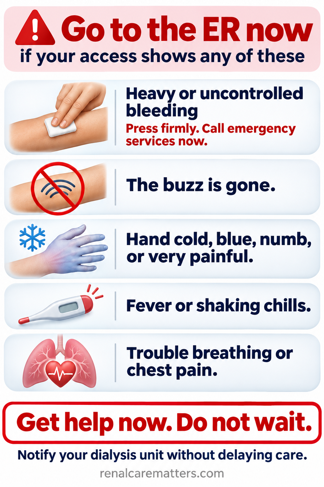
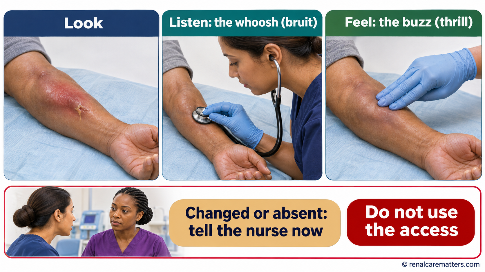

Fistulas, grafts, and catheters; how to protect the access in everyday care; and the changes that must be reported at once.
PublishedNailathalaGipatikPepalwal:ReferencesMga SanggunianMga TinubdanReng Reperensya:9Audience: Entry-level dialysis technicians and trainees · preceptors, head nurses, and training providersRead timeOras ng pagbasaOras sa pagbasaOras ning pamamasa:
This module is study material for dialysis technicians. It explains why safe practice works the way it does. It does not replace the physician’s orders, the supervising nurse’s direction, your unit’s approved procedures, or the manufacturer’s instructions for use. What a technician may do differs between countries and between facilities, so do only the tasks you are trained, assigned, and signed off to do. Every case is fictional.
Learning objectives
After this module you should be able to
Tell an arteriovenous (AV) fistula, an AV graft, and a central venous catheter (CVC) apart.
Explain the everyday measures that protect an access and lower the risk of infection.
Recognize a change in flow, signs of infection, bleeding, and other warning findings.
Escalate and report what you observe promptly, and make observations only as you are authorized.
Classroom 6 hSkills lab 6 hSupervised placement 14 h
Pre-testBefore you read, answer the 5 self-assessment questions and note your score. After the module, select New set of questions and compare. The difference is what you learned; the questions you still miss are what to reread.
Start here
The big picture, in plain words
In plain wordsPicture an island town joined to the mainland by a single bridge. Everything the town needs crosses that bridge. To be dialyzed, a patient needs a way to move a large amount of blood out of the body and back, three times a week, for years. That way in is called the vascular access, and it is the patient’s bridge. Patients call it their lifeline, and they are right: without a working access there is no dialysis.
The picture has a limit. A bridge stays the same from week to week, and an access does not. It can narrow, clot, or become infected, and the first sign is often small: a buzz that feels different, a dressing that is wet, a needle site that bleeds longer than usual. A technician does not treat the access, but is often the first person to notice that something has changed.
Figure 1. The three kinds of hemodialysis access: a fistula, a graft, and a catheter.
Figure 2 · Key terms for this module
FistulaA vein joined directly to an artery by surgery, so that the vein grows large and strong enough for needles.
GraftA soft synthetic tube placed under the skin to join an artery and a vein.
CatheterA tube placed in a large vein in the neck or chest, with two ends outside the body.
ThrillThe buzzing you can feel over a working fistula or graft.
BruitThe whooshing sound you can hear over it with a stethoscope.
Exit siteThe place where a catheter comes out through the skin.
Opening case · fictional
Case: The usual vibration is gone
It is Wednesday morning. Ms. Carmela Lim, 52, has just arrived for her scheduled session and is waiting beside the scale. Before you begin anything, she tells you, “My fistula normally buzzes when I check it. I couldn’t feel it this morning.” The last time she noticed her usual vibration was the evening before. Treatment has not started. You see no bleeding. She asks whether the team can go ahead anyway, because she can stay only for her usual appointment time.
Before reading on, decide:
What is the safest next step, and who needs to know now?
Does the absence of visible bleeding mean the access is ready to use?
Which facts belong in your handoff?
Keep your answers in mind. The lesson gives you what you need, and the case review near the end shows one sound response.
Lesson · part 1
Identify the access type
Picture a garden hose fitted straight onto a strong faucet. Lay your hand on the hose and you feel the water rushing through it. If the hose kinks or something blocks it, the feel changes before you see any sign on the outside. A fistula or graft behaves in a similar way. The picture has a limit. A hose is the same every day, and an access is not. What matters is a change from this patient’s own usual, and it is the clinical team that judges what the change means.
Vascular access joins the patient’s circulation to the blood circuit outside the body for hemodialysis. The clinical team chooses the access from the patient’s kidney care plan, anatomy, expected course of treatment, and preferences. The access type is written in the chart. Confirm the assigned access, and take any uncertainty to the nurse.1,2

Figure 3. Access types, simplified for recognition. The table provides a text equivalent.
Access
What it is
What to keep in mind
AV fistula
A surgeon joins an artery directly to a vein, usually in an arm. The extra flow makes the vein grow until it can be used for dialysis.
The team decides when it is ready. You may feel a usual vibration from the flow. Any change from the patient’s baseline needs review.
AV graft
An implanted tube joins an artery and a vein and gives a path for dialysis access.
A graft is built differently from a fistula. It can narrow, clot, or become infected.
CVC
A dialysis catheter sits in a central vein. Usually part of it lies outside the body, with separate channels for drawing blood out and returning it.
Protect the dressing, and report any damage or movement. Catheters generally carry a higher risk of bloodstream infection than fistulas or grafts.
A thrill is the vibration of blood flow that can be felt over an AV access. A bruit is the sound of that flow heard through a stethoscope. The clinical team interprets the character of each sign and any change from the patient’s baseline. As a trainee, you may watch the nurse’s assessment or practice recognizing simulated findings on a model. Make observations only when you are authorized and supervised.3,4

Figure 4. The access is where the circuit begins and ends. Everything the machine does depends on good flow from this one place.
Lesson · in practice
The look, listen, feel check in detail
In plain wordsThink of a mother checking a sleeping baby. She looks at the color of the face, leans close to hear the breathing, and lays a hand on the forehead. She does it the same way every night, and that is why she notices the one night something is different. The access check uses the same three senses, in the same order, every time.
The picture has a limit. A mother decides for herself what to do next. You do not. Every fistula and graft is checked before every treatment. The check takes about one minute and uses your eyes, a stethoscope, and two fingers. The nurse owns the assessment and decides whether the access can be used. If your unit authorizes technicians to do the check, your work is to do it the same way every time and to report anything that differs from that patient’s usual.
Figure 5 · One minute, same order every time
PrepareHand hygiene and clean gloves. Ask the patient: any change in your access since last time?
CompareLook at both arms side by side, with the sleeve rolled well above the access.
LookSkin color, swelling, needle scabs, bulges, drainage, and the color of the hand.
ListenLay the stethoscope lightly along the access. Start near the surgical scar and move up the arm.
FeelTwo fingers, flat and light, along the same path. Note any warmth or tenderness.
Report and recordEither normal for this patient, or exactly what is different. Tell the nurse before the access is used.

Figure 6. Feeling for the thrill with two flat fingers and listening for the bruit. Press lightly; heavy pressure hides both.
A healthy access has a thrill that feels like a soft, continuous buzz. It is strongest near the join between artery and vein, at the surgical scar, and it fades along the arm. Its bruit is a low, continuous whoosh. Both carry on through the whole heartbeat, without gaps. Learn what normal feels like on each of your patients, because every change you report is measured against it.
Step
Finding
What it may mean
Report how urgently
Look
Redness, swelling, or pus at the access or at a needle site
Possible infection
Now, before the access is used
Look
A bulge with thin, shiny, or pale skin, or a scab over it that does not heal
A weak spot in the vessel wall (an aneurysm) that could break open
Now. If it is bleeding, this is an emergency
Look
The whole arm swollen, or new veins showing on the chest or shoulder
Possible narrowing of a large vein higher up
Before treatment, the same day
Look
The hand on the access side pale, bluish, or cold, or sores on the fingertips
The access may be taking blood away from the hand
Now if new or painful; otherwise before treatment
Look
A large bruise or firm swelling from the last session
Blood leaked into the tissue last time
Before needles are chosen
Listen
A high-pitched or whistling sound
Possible narrowing (stenosis)
Before treatment
Listen
Sound heard only in short bursts with each heartbeat, not continuous
Possible narrowing
Before treatment
Listen
No sound
Possible clot
Immediately. The access is not used
Feel
A hard, bounding pulse where there is usually a soft buzz
Possible narrowing downstream of your fingers
Before treatment
Feel
A thrill weaker than the patient’s usual
Reduced flow
Before treatment
Feel
No thrill
Possible clot
Immediately. The access is not used
Feel
Warmth, hardness, or pain on light touch
Possible infection or clot
Now, before the access is used
RememberCompare the patient with the same patient last session, not with a textbook. “Weaker than Monday” is a useful report. The nurse and the nephrologist decide what it means.
Lesson · part 2
Protect the access during routine care
Figure 7. Protect the access arm: no blood pressure cuff, no needle sticks, and no tight bands on that arm.
An access stays open while blood keeps moving through it, and stays clean while its skin stays intact. Most protective habits follow from those two points.
AV fistula or graft. Check which side the access is on in the record before anyone takes a blood pressure or plans a routine blood draw. Under the access care plan, keep that limb free of blood pressure cuffs, routine needle sticks, and anything that squeezes it. Help the patient avoid pressure from tight items, equipment, or the way they sit or lie. Pass on at once any report of a changed vibration, redness, swelling, or bleeding.
CVC. Keep the dressing and the outside part of the catheter safe from moisture, pulling, and damage. Report promptly a wet, loose, or soiled dressing, a missing cap, or a change in where the catheter sits. Catheter handling and dressing care belong to qualified staff.
All access types. Follow hand hygiene and the facility’s infection prevention policy. Reinforce the approved patient teaching, including whom to call about a change at home. Keep the access and connections in view during treatment as directed, and report any safety concern even when the machine is silent.
Patients may be given their own instructions for checking the access every day. Use the approved materials, and use teach-back to confirm that the patient understands their plan.2,5

Figure 8. Catheters carry the highest infection risk. Hub cleaning and dressing care are done by authorized staff using a strict clean technique.

Figure 9. Protecting the access arm. Four reminders for protecting a dialysis access arm and catheter dressing.
Lesson · in practice
The access arm: what never happens to it, and what patients do at home
Think of the access as a garden hose that must keep water moving through it day and night. Step on the hose and the flow slows; make a hole in it and dirt gets in. A fistula or graft clots when blood stops moving through it. Anything that squeezes the arm slows the blood. Anything that breaks the skin lets bacteria in. Every rule below follows from those two facts.6
Never on the access arm
Why
Do this
Blood pressure cuff
The cuff stops flow completely for several seconds, and a clot can form
Use the other arm, or the leg site your unit trains you to use
Routine blood draws or intravenous lines
Each puncture damages the vessel and can bring infection
Remind other staff which arm is the access arm
Tape wrapped all the way around the arm
It works like a tourniquet as the arm swells
Place tape along or across the arm, never in a full circle
Tight bandage, watch, bracelet, or sleeve
Constant pressure slows the flow
Ask the patient to remove these before treatment and to keep them off that arm
Blanket, sleeve, or towel over the needles during treatment
A needle that slips out bleeds where no one can see it, and the machine may not alarm
Warm the patient with a blanket that leaves the access and lines in view
The patient lying or sleeping on the arm
Body weight squeezes the access
Reposition the patient gently and explain why
Touching needle sites with bare or used gloves
Hands carry bacteria to a fresh puncture
Hand hygiene and clean gloves each time (Module 5)
The nurse teaches access care. You see the patient three times a week, so you are well placed to repeat the same short messages in everyday words, and to notice when one is not being followed.
Figure 10 · Points you can reinforce with patients
Check the buzz every dayFeel for the thrill each morning and before sleep. If it is weaker or gone, call the unit at once. Do not wait for the next session.
Wash the arm before treatmentOn arrival, soap and water over the whole access arm, then dry it with a clean towel.
Keep the arm freeNo watch, bracelet, tight sleeve, or bag strap on that arm.
Do not sleep on itLie on the other side or on the back.
Carry weight with the other armHeavy bags, pails, and children go on the other side. The care team sets any limit.
Leave the scabs aloneNo scratching or picking at needle sites.
Know how to stop bleedingClean gauze or cloth and firm finger pressure on the site. Call the unit, or go to an emergency room, if it does not stop.
RememberIf a patient asks about something not on this list, such as exercise, a new lump, or pain, the answer is, “Let me get the nurse for you.”
Lesson · in practice
Catheter care from the technician’s side
A dialysis catheter is an open door into a large vein just above the heart, and two things follow from where it ends. Bacteria that enter through a hub, or along the tunnel under the skin, reach the bloodstream directly. And an open, unclamped lumen (one of the catheter’s two channels) can let air in or blood out within seconds. For these reasons, opening, connecting, flushing, and dressing a catheter are nursing tasks in every unit.6 Your part is to watch the door and raise the alarm.

Figure 11. Catheter: look, do not open. Tunneled dialysis catheter with an intact dressing, closed clamps, and caps, with four points to check.
You always
You never
Look at the dressing on arrival: dry, clean, and stuck down on all sides
Lift, press down, or re-tape a dressing
Check that both clamps are closed and both caps are on whenever the catheter is not connected
Open a clamp, remove a cap, or touch a hub
Wear a mask, and help the patient put one on, during connection and disconnection if your unit requires it
Talk, cough, or lean over open hubs
Arrange the blood lines so nothing pulls on the catheter, with a little slack and an anchor point where the nurse placed it
Let lines hang from the catheter by their own weight
Keep scissors and other sharp objects away from the catheter
Cut tape or gauze near the catheter
Report anything on the list below within the same minute
Decide that a small change can wait until handoff
Figure 12 · Report to the nurse at once
DressingWet, loose, soiled, or stained with blood.
Exit siteRedness, swelling, crusting, pus, or pain where the catheter leaves the skin.
TunnelRedness or tenderness along the track under the skin.
Catheter positionMore tubing showing than before, the cuff visible at the skin, or a stitch missing.
HardwareA cracked hub, a missing cap, or an open clamp.
The patientFever, chills, or shaking, especially soon after treatment starts.
Stop and reportA missing cap or an open clamp on a catheter that is not connected is an emergency. Call the nurse immediately and stay with the patient. Do not handle the catheter unless the nurse tells you to.
Lesson · part 3
Recognize a change and escalate it
Figure 13. Look, listen, feel. A working fistula or graft has a buzz you can feel (the thrill) and a whoosh you can hear (the bruit).
Your work is not to name the problem. It is to notice the change, describe it exactly, and get it to the nurse before the access is used.
Finding
What it could mean
Technician response
Usual thrill newly absent or markedly changed
A possible problem with flow through the access, such as narrowing or clotting. It needs clinical assessment.
Keep the access out of use and tell the nurse promptly. Report when the usual finding was last noticed.
New swelling of the access limb or prolonged bleeding after treatment
A possible access complication. The clinical team weighs the pattern with the other findings.
Tell the nurse the side, location, timing, progression, and any symptoms that came with it. Escalate ongoing heavy bleeding at once.
New redness, warmth, tenderness, swelling or drainage at the access
Possible infection or another local complication. Fever or chills can come with infection.
Alert the nurse promptly. Call for help at once if symptoms or vital signs suggest the patient is getting worse, as the unit’s protocol directs.
New pain, swelling or bruising near a needle during dialysis
A possible infiltration or another access problem, which needs the nurse’s assessment now.
Alert the nurse promptly, keep the area in view, and follow the instructions you are given.
A newly cold, pale, painful, numb or weak hand on the access side
A possible problem with blood supply to the hand, which needs prompt clinical review.
Alert the nurse and report when it began and what the patient feels. Activate the unit emergency process if you are directed to or if protocol requires it.
Active heavy bleeding, visible dislodgement or an open blood connection during treatment
An immediate emergency. The machine may not alarm for some dislodgements.
Call for help at once and follow the unit’s emergency procedure within your authorized role.
Report what you saw, what the patient said, and how both differ from baseline. The clinical team works out the cause and decides whether the access can be used. This module teaches recognition and communication. Procedures on a patient’s access need specific authorization and validated competency.1,7,8

Figure 14. Warning signs at the access that need a nurse immediately.
Stop and reportNo buzz where there is usually a buzz means that the access may have clotted. Do not use it. Tell the nurse immediately, because early treatment can save the access.

Figure 15. Look, listen, feel. Three panels showing looking at, listening to, and feeling a fistula, with a reminder to report any change.
Lesson · in practice
Needle sites: during treatment and after the needles come out
Cannulation, which means placing the needles, is the nurse’s task. Watching the sites for the next four hours is everyone’s task. A needle site changes quietly: a little swelling, a damp edge of tape, a line pulled a bit tighter. On each round, look at both needle sites before you look at the screen.
What you see or hear
What it may be
What you do
Swelling, a firm lump, pain, or burning at a needle; often a pressure alarm at the same time
Infiltration: the needle tip has gone through the vessel wall and blood is entering the tissue
Call the nurse now. Keep the arm still and in view. Do not reset the alarm
Blood oozing around a needle; gauze or tape turning red
Bleeding around the needle
Call the nurse. Do not add tape over it and walk away
Tape lifting, wet, or peeling; needle wings no longer flat on the skin
A needle at risk of slipping out
Call the nurse to re-secure it. Ask the patient to keep the arm still
A blood line pulled tight, caught on the chair, or under the patient
Pull on the needle
Free the line if this is within your assigned tasks; otherwise call the nurse
Needle partly or fully out; blood on the sheet, the chair, or the floor
Dislodgement
Shout for help immediately. Follow the unit’s emergency procedure within your training (Module 10)
Figure 16 · Securing points to check on every round
Wings tapedEach needle held flat on the skin with the taping method your unit uses.
Dry tapeSweat or blood under the tape means it is no longer holding.
Line looped and anchoredA loop of line taped or clipped, so that a tug pulls on the anchor and not on the needle.
Connections tightNeedle tubing fully locked to the blood line.
Everything in viewBoth sites and both connections uncovered.
Arm supportedA pillow or armrest, so the patient does not need to move the arm.
After the needles come out. The nurse removes each needle. In many units the technician or the patient then holds pressure. Do this only if your unit assigns it to you and has signed you off.
Figure 17 · Holding pressure, if this is assigned to you
PrepareClean gloves. The nurse places folded sterile gauze over the site.
Press after, not duringStart pressing once the needle is fully out. Pressing on a needle that is still in the vessel can cut the wall.
Two fingersOne fingertip over the hole in the skin and one just beside it, over the place where the needle entered the vessel.
Firm, not occludingFirm enough to stop the bleeding, light enough that the thrill can still be felt above or below your fingers.
Hold without peekingCommonly about 10 minutes, as your unit states. Lifting the gauze early pulls the fresh clot away, and the count starts again.
Check and dressThe nurse checks that the bleeding has stopped and that the thrill is present, then applies the dressing.
Report bleeding that goes on well past the usual time to the nurse, and record it with the number of minutes. Many units flag bleeding beyond about 20 minutes, or bleeding that takes longer and longer over several sessions, because it can point to a narrowing in the access. The patient stays seated until the nurse is satisfied.
Stop and reportIf bleeding soaks through the gauze, spurts, or comes from a bulging or scabbed area, keep firm pressure on the site and call for help at once.
Lesson · part 4
Work through the case
Does no bleeding mean ready? No. The absence of visible bleeding answers a different question and leaves the concern about flow open. The nurse and the clinical team assess the access and decide the next step. Her wish to finish within her usual time is real, and you can tell her that you have asked the nurse to see her now.
Teach-back prompt. “If the usual vibration changes when you check it at home, how will you contact the team?” If her answer is unclear, repeat the approved contact instructions in plain words and ask again.9
Lesson · in practice
Worked case: you are the one who finds no thrill
In the opening case the patient reported the change. In this one, you find it yourself. The unit in this example authorizes technicians to do the pre-treatment check.
Time
What happens
What a competent technician does
06:10
Mr. Dela Paz, who has a left forearm graft, sits at Station 5. He says the arm “felt normal last night” and he did not check it this morning
Hand hygiene, gloves, both arms compared
06:11
The skin looks normal. There is no thrill anywhere along the graft
Checks again with light pressure, in case heavy fingers hid it. Still nothing
06:12
No bruit with the stethoscope. The hand is warm and pink
Stops the check. Does not squeeze, massage, or press harder on the graft
06:13
The priming of Station 5 is about to finish
Tells the nurse in person, now. Leaves the needles unopened
06:14
The patient asks, “Is it blocked?”
Says: “I could not feel the usual buzz, so I have asked the nurse to check it right away.” Does not guess the cause
06:20
The nurse confirms the finding and calls the nephrologist
Records the times, the finding, who was told, and the instruction received
Exact report wording. “Station 5, Mr. Dela Paz, left forearm graft. At 06:11 I found no thrill and at 06:12 no bruit along the whole graft. He last felt his usual buzz last night at about nine. The skin looks normal, and the hand is warm and pink. He has not been cannulated, and I have kept the access out of use. Please assess him now.”
Figure 18 · Why this report works
Who and whereStation, name, access type, and side.
What and whenThe finding and the time you found it.
Last known normalThis tells the team how old a clot could be.
What else you sawNormal findings are reported too.
What you didNothing started; access kept out of use.
What you needA clear request.
RememberA clotted access can sometimes be reopened if the team acts quickly. Your part is the minutes between finding it and the nurse knowing. Keep those minutes short.
On the floor
Real situations: problems and solutions
These are fictional but typical. For each one, cover the answer, decide what you would do, then compare. Where a step depends on local rules, your unit’s procedure and your supervisor’s direction come first.
The buzz is gone
What you see
Mrs. Teresita Mendoza, 61, arrives on Monday morning and says, “My fistula feels quiet since last night.”
What is likely going on
The access may have clotted. A clot can sometimes be cleared if it is treated quickly.
What to do
Do not prepare for needles. Tell the nurse immediately, with the time the patient first noticed the change.
Why it matters
Every hour counts when a clotted access is to be saved.
A wet catheter dressing
What you see
During the rainy season, a patient arrives soaked from a downpour. The dressing over his chest catheter is damp and lifting at one edge.
What is likely going on
A wet dressing lets bacteria reach the exit site.
What to do
Do not press it back down. Tell the nurse, who will assess the site and change the dressing with clean technique.
Why it matters
Catheter infections can spread to the bloodstream and the heart.
Bleeding that will not stop
What you see
Ten minutes after needle removal, a needle site is still oozing through the gauze.
What is likely going on
Prolonged bleeding may point to a narrowing in the access, too much blood thinner, or pressure applied in the wrong place.
What to do
Keep the patient seated and tell the nurse. Do not send the patient home until the nurse is satisfied.
Why it matters
Repeated long bleeding times are a warning sign that the team investigates.
Blood pressure on the wrong arm
What you see
As patients settle in, a new aide is about to wrap a blood pressure cuff around a patient’s fistula arm.
What is likely going on
The pressure of a cuff can clot the access.
What to do
Stop the aide, move the cuff to the other arm, and explain why.
Why it matters
One careless cuff can end an access that took months to create.
Field notes
Ask every patient on arrival: “Any change in your access since last time?”
Report redness, warmth, swelling, pain, or drainage at an access the same minute you see it, not at handoff.
Keep the access uncovered during treatment. A blanket over a needle site has hidden fatal bleeding.
Never touch a catheter hub, clamp, or cap unless that task has been assigned to you and you are signed off for it.
Case review
Back to the case: The usual vibration is gone
Case debrief.The safest next step. Keep the access out of use and tell the supervising nurse before any treatment begins. Ms. Lim is describing a new change from her own baseline, and that is a finding in itself.
Example handoff. “Before treatment, Ms. Lim told me she could no longer feel her usual fistula vibration this morning. She last noticed it yesterday evening. I saw no external bleeding. Treatment has not started, and I have kept the access out of use. Please assess it and advise on the plan.” If you did not make an authorized access observation yourself, keep what the patient reported separate from anything you observed. Record the time, the relevant facts, whom you told, and the instructions you received.
Skills lab · with your preceptor
Skills checklist: Access recognition and handoff
Materials: Access diagram or training models, three mock charts, a simulated access change, and the unit’s escalation guide. Rate each step satisfactory, needs practice, or not observed. Your preceptor rates each step as satisfactory, needs practice, or not observed. Steps marked Critical must all be satisfactory before sign-off. This checklist supports supervised learning; your unit’s own procedure and competency form are the authority. A printable version of every checklist is on the trainer page.
Distinguishes fistula, graft and catheter using diagrams or models.
Identifies which limb needs protection in the mock record and gives examples of pressure or puncture to avoid.
Describes how to protect a catheter dressing and when to report a change.
Uses hand hygiene and limits observations to authorized activities.
CriticalHolds use of the affected access and promptly notifies the nurse for a newly absent usual thrill.
CriticalIdentifies heavy bleeding or visible dislodgement as an emergency and summons help in the simulation.
Reports access type and side, onset, patient-reported change, observed signs and treatment status.
Documents the observation, notification and confirmed next action without concluding a diagnosis.
Reinforces approved home reporting instructions using teach-back.
CriticalPerforms the look, listen, feel check on a model in the taught order and states one finding from each step that must be reported before the access is used.
Demonstrates two-finger pressure on a model after simulated needle removal: starts only after the needle is out, keeps the thrill present, and does not lift the gauze early.
CriticalChecks a simulated catheter patient for dressing, clamps, caps, and line pull without touching the catheter, and reports a planted fault to the preceptor.
Placement activity. Watch an authorized access assessment with your preceptor, or complete the equivalent simulation. Name one baseline observation, one protective step, and the correct route for reporting an unexpected change. Log your role and the feedback you received, using approved de-identified information.
Self-assessment
Check your understanding
Each visit draws 5 questions at random from this module’s 21-question bank. Choose the single best answer for each, then select Check answers; an explanation appears under the best answer. Select New set of questions for a different mix. A good target is 4 of 5 on two different sets. Nothing you select is sent anywhere; scoring happens in your browser.
Educational study material for dialysis technicians. It does not replace physician orders, the supervising nurse’s direction, approved unit procedures, manufacturer instructions, DOH licensing requirements, or supervised training.